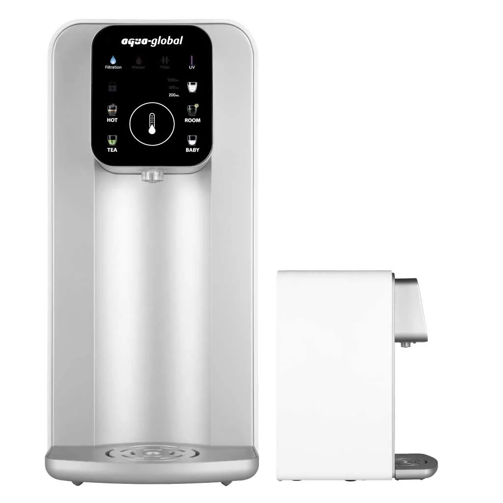
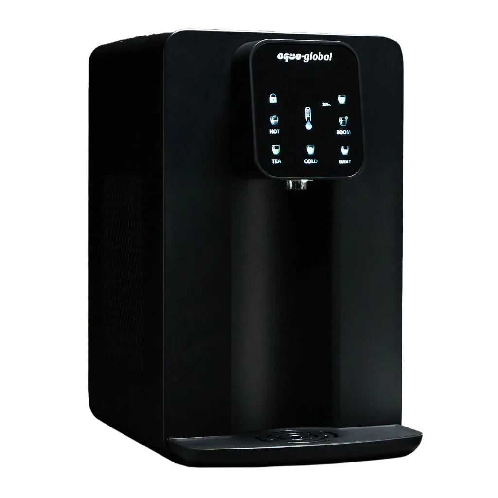
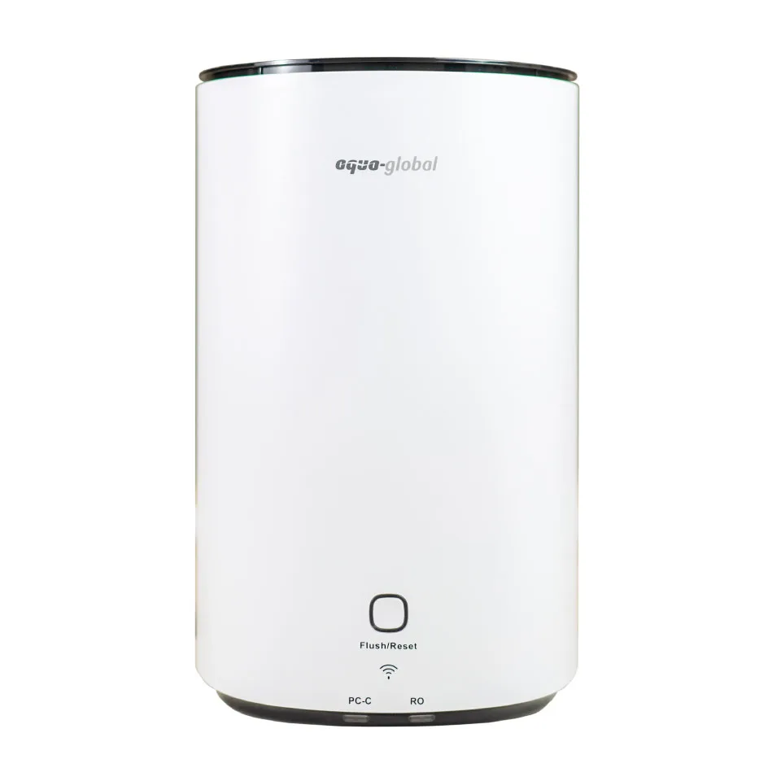
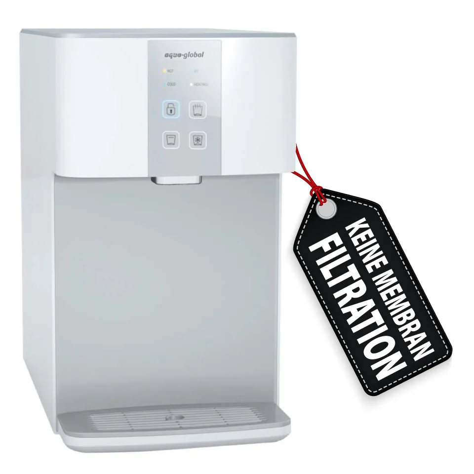
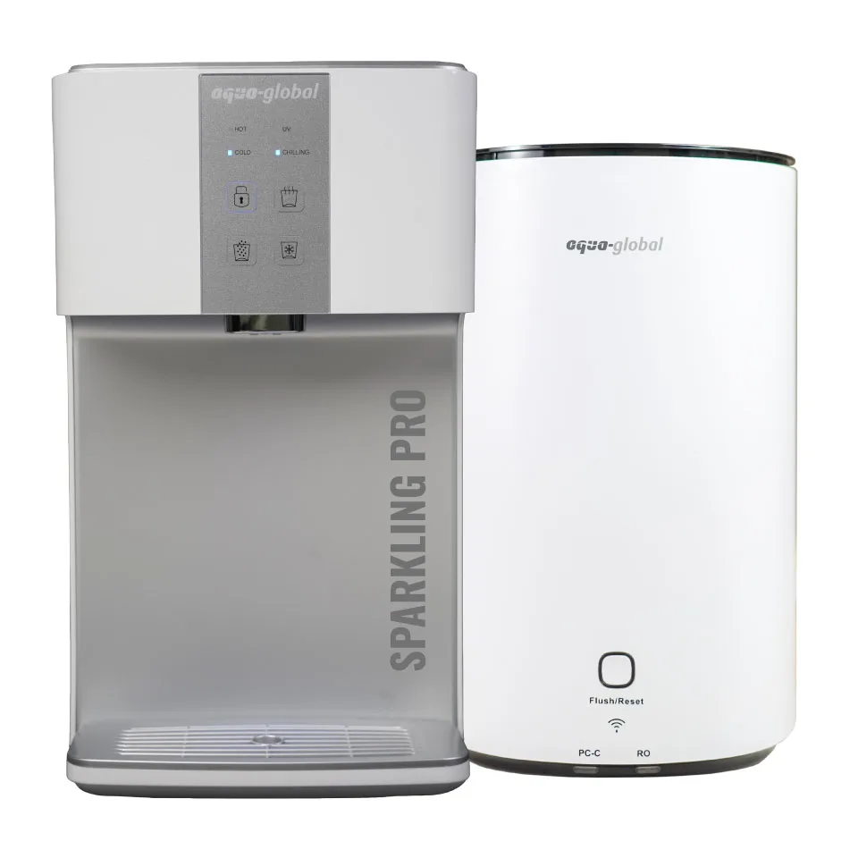
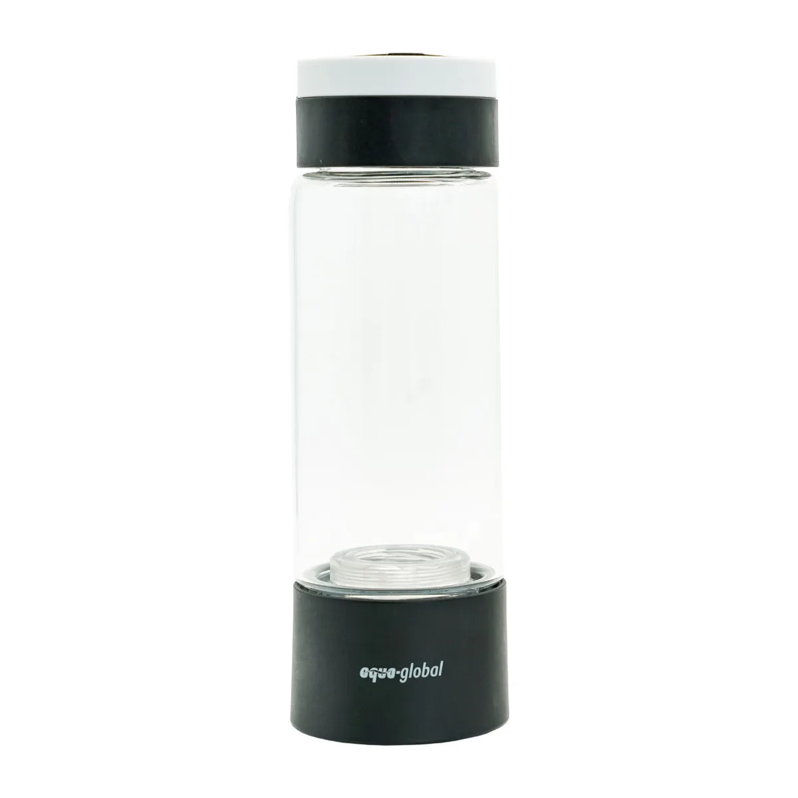

Wasserfiltration
Aqua Global
Deutscher Anbieter von Umkehrosmoseanlagen, Wasserbars, Heiß-/Kaltwasserspendern, Sprudelsystemen und Wasserstoffflaschen für Haushalt und Büro.
Produkte in der Datenbank
Aqua Global
Flexible Touch
Preis auf Anfrage
Bauart: Mobile Auftisch-Wasserbar mit UmkehrosmoseWasseranschluss: Nicht erforderlichTemperaturen: Baby ca. 50 °C; Tea ca. 85 °C; Hot ca. 95 °C; Room ungekühlt

Aqua Global
Mini Touch
795,00 €
Filterwechsel: Composite | 6-12 Monate Nachfilter | 6-12 Monate Membrane | 12-24 Monate UV-Lampe | 60 MonateTemperaturen: Baby | ~50°C Tea | ~85°C Hot | ~95°C Room | ungekühltTankgröße: 2,50 Liter (innen)

Aqua Global
Mini Touch PRO – Black
1.195,00 €
Filterwechsel: Composite | 6-12 Monate Membrane | 12-24 Monate UV-Lampe | 60 MonateTemperaturen: Baby | ~45-50°C Tea | ~80-85°C Hot | ~90-95°C Room | ungekühlt Cold | ~6-12°CFilterleistung: Befüllungstemperatur | 10-38°C Leistung | ca. 15-25 Liter / Std.

Aqua Global
Basic
895,00 €
Filterwechsel: PC-C | 6-12 Monate Membrane | 18-36 MonateTemperaturen: Room | ungekühltTankgröße: kein Tank | Direct Flow

Aqua Global
Sparkling
1.795,00 €
Filterwechsel: Nano-Silver Carbon Filter | 6-12 Monate UV-Lampe | 6-12 MonateTemperaturen: Sprudel | gekühlt | still | ungekühltTankgröße: kein Tank | Direct Flow

Aqua Global
Sparkling Pro
2.295,00 €
Filterwechsel: PC-C | 6-12 Monate Membrane | 18-36 Monate UV-Lampe | 6-12 MonateTemperaturen: Sprudel | gekühlt | still | ungekühlt (Basic) | heißTankgröße: kein Tank | Direct Flow

Aqua Global
Hydrogenflasche Glas schwarz
169,00 €
Produktart: Hydrogen BottlesTechnologie: Herstellerangaben auf der offiziellen ProduktseitePreisstatus: Offizieller Shoppreis bei Recherche